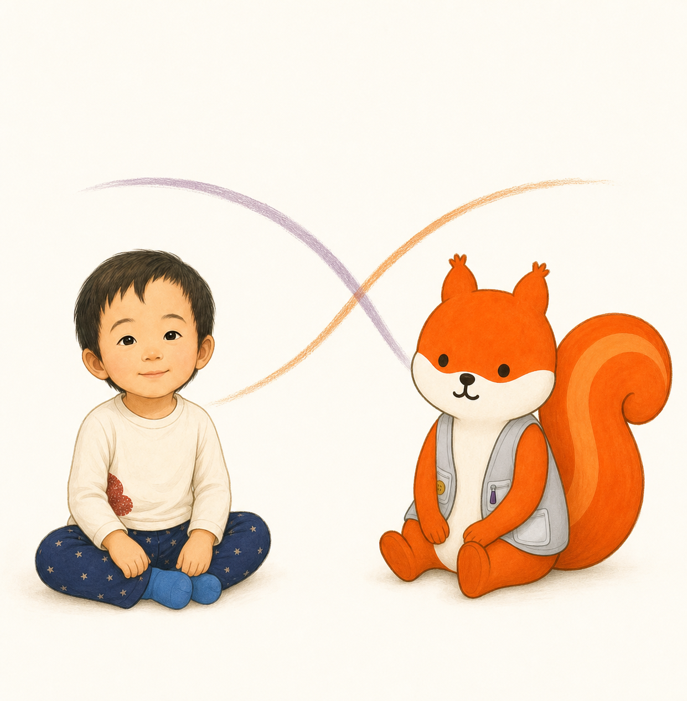
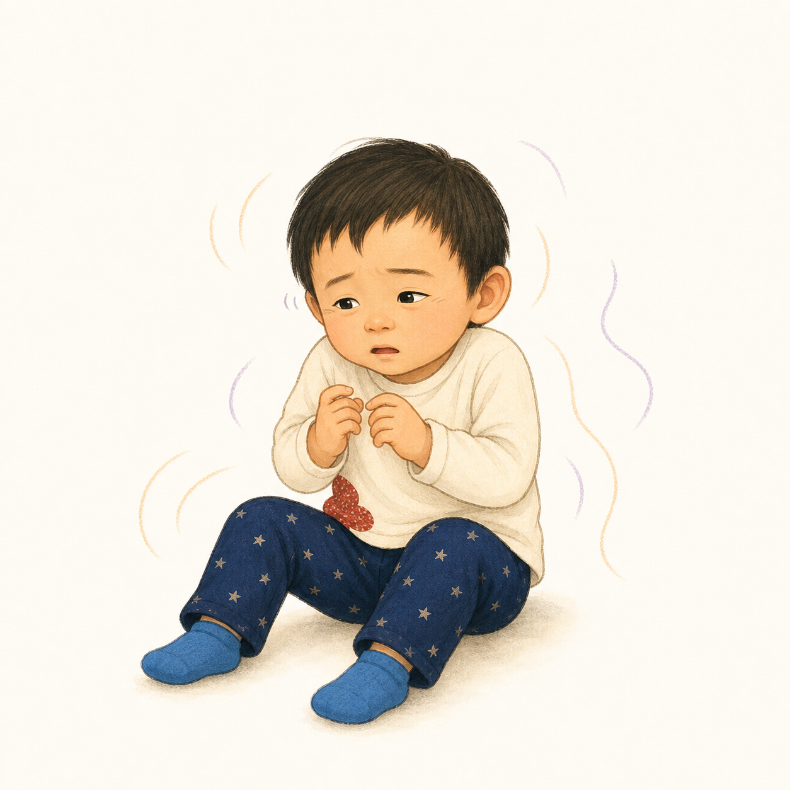
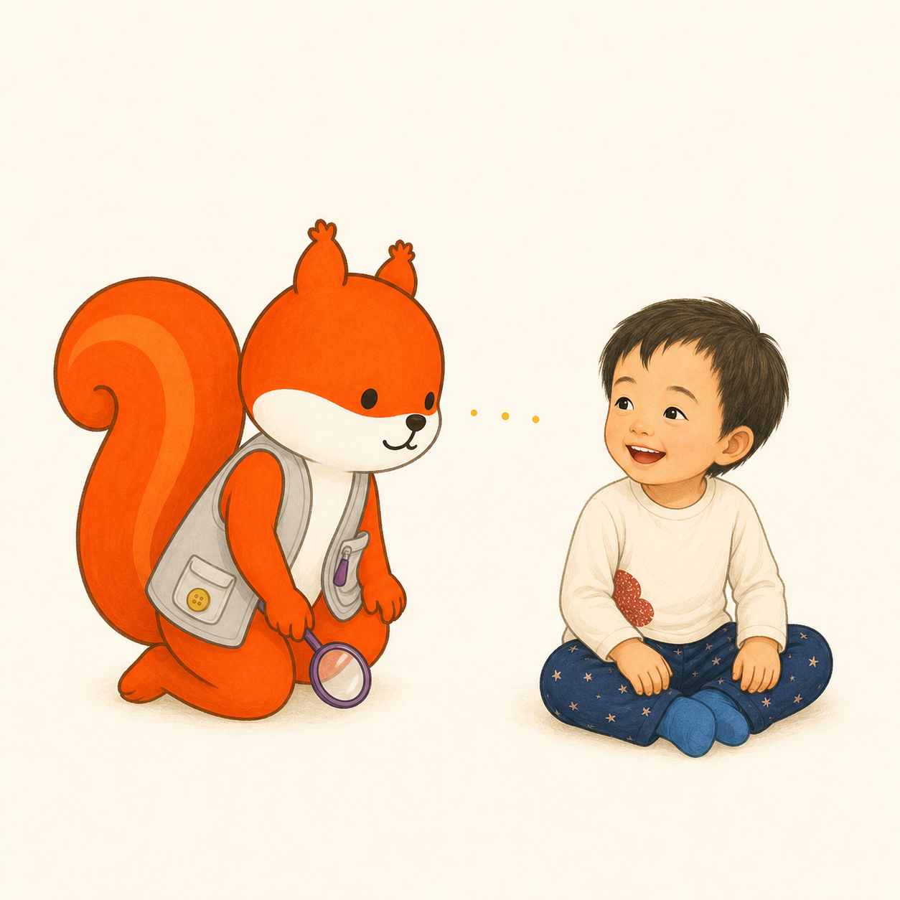
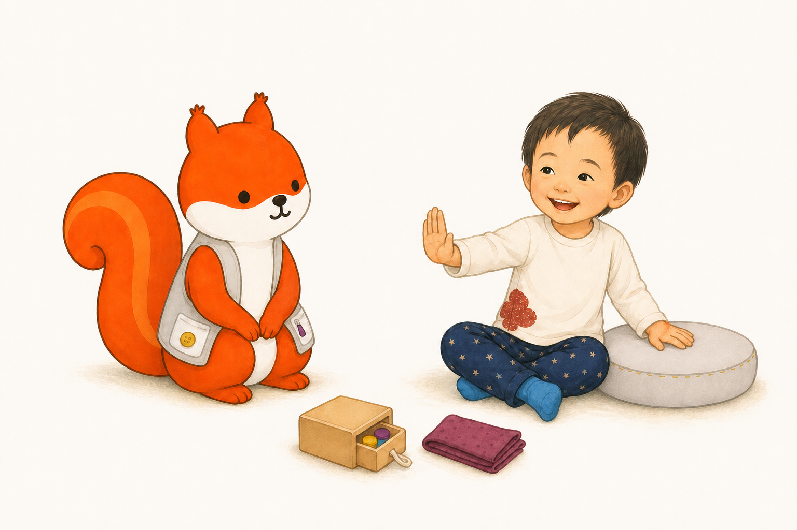
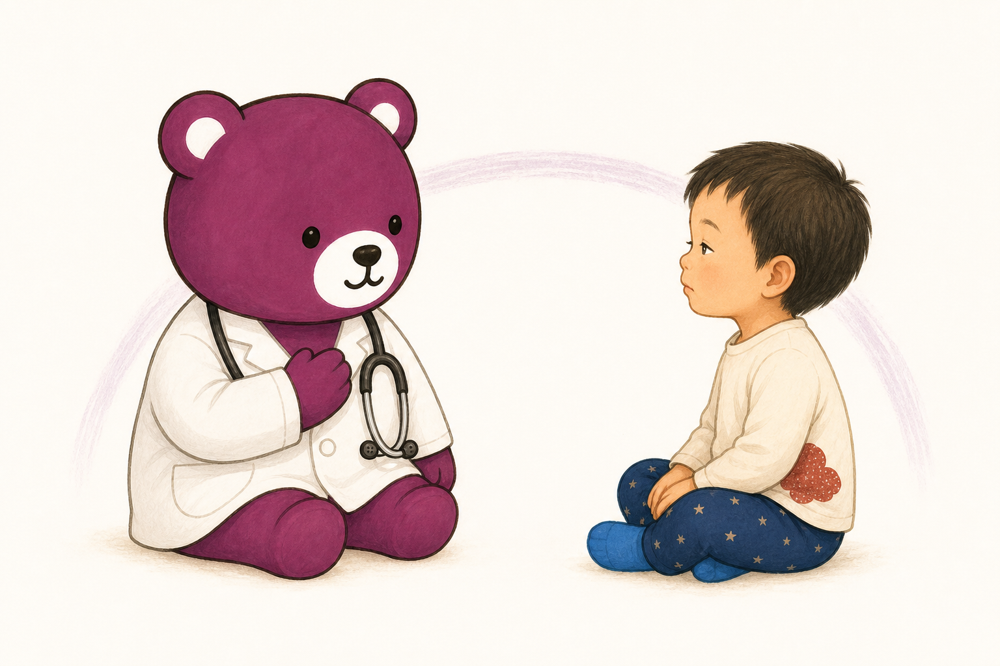
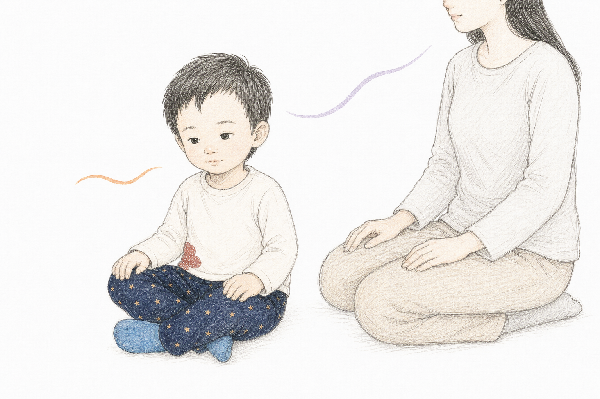
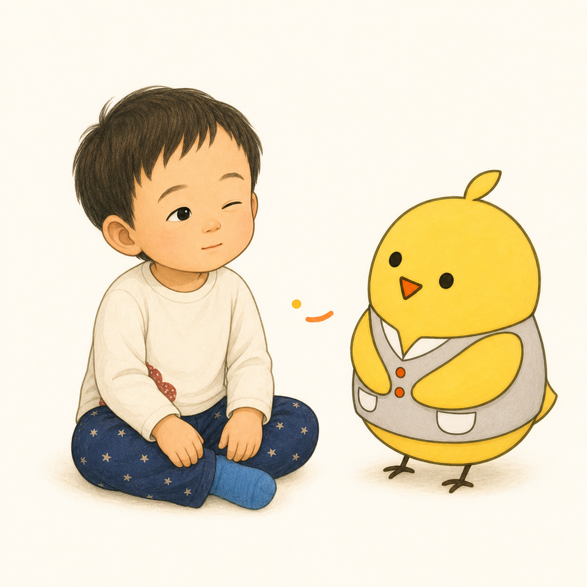

1
たのしい おへや。
おんがく。あかり。あしおと。
カーテン。つみき。みんなの こえ。
ひとつずつなら、
すきなのに。

2
とっ とっ とっ
いきが はやい。
かたが ぎゅっ。
ゆびが くるくる。
まばたき、ぱちぱち。
ぼくの からだが、
さきに はしりだした。
3
「おちついて」
「だいじょうぶ」
ママも いっしょうけんめい。
でも その ことばも、
いまは はやくて つかまらない。
こえが、
また ひとつ ふえた。
4
ぼくの からだだけ、
はしって いるの？
5
りすせんせいは、
なにかを たす まえに、
「いま、なにが
いっぱい なのかな？」
みみ。め。はだ。からだ。
ひとつずつ、みていった。

6
おとを ちいさく。
あかりを すこし。
ことばを ひとつ。
ひととの あいだを ひろく。
たす まえに、
へらして みる。

7
ぼくの からだは、ときどき
「もっと かんじたい」を さがす。
くるまを おす？
クッションに ぎゅっ？
テントで ひとやすみ？
それとも、
いまは なにも しない？
ぼくの からだに、
きいて みる。
8
かおを そむける。
からだを はなす。
てを とめる。
それも、ぼくの
「おしまい」。
りすせんせいも、いっしょに とまった。
9
くませんせいは、
いきと かおいろ、
いたい ところ、
いつもとの ちがいを みた。
「かんかく」だけで、
きめないために。

10
ママは、ぼくに
「ゆっくり いきして」と
いわなかった。
じぶんの こえを ちいさく。
うごきを ゆっくり。
すこし はなれて、となりに すわった。
ママが まず、
じぶんの はやさを ゆるめた。

11
ぼくは まだ、
ママと おなじ いきじゃない。
でも、かたの ぎゅっが
すこし ほどけた。
まばたきが、ひとつ ゆっくり。
ことりせんせいは、
その ちいさな へんじを きいた。

ママの いき。
ぼくの いき。
おなじじゃない。
でも、ときどき、
あいだで あう。
ぼくの リズムは、
ここに いた。

おはなしの あとに
感覚は、増やすだけではありません。
Sensory Seeker――もっと感覚を探すこと
何度も跳ぶ、回る、押す、物へ強く触れる、大きな音や強い匂いを繰り返し確かめるなど、身体が「もっとはっきり感じたい」と感覚を探すように見えることがあります。これはSensory Seeker（感覚を求める傾向）と表現されることがありますが、診断名ではありません。行動を一律に止めたり、「刺激が足りない」と決めたりせず、いつ、どこで、何の前後に起き、本人の参加や安全にどう影響しているかを見ます。
同じ子が、動きや圧はもっと欲しがりながら、音や光は避けることもあります。日によって「もっと」と「もう十分」が変わることもあります。求める子・避ける子という固定的なタイプに分けず、感覚の種類とそのときの身体の状態を一つずつ確かめます。
Sensory Diet――暮らしの中の個別の感覚方略
「感覚ダイエット」は食事制限ではなく、生活への参加を助けるため、必要な感覚活動や環境調整を一日の中へ個別に組み合わせる考え方です。Sensory Seekerへ刺激をたくさん与える方法でも、誰にでも同じ活動を行う処方でもありません。生活上の目標と本人の選択を中心に、減らす・加える・変える・休む・終えるを一つずつ試し、反応を確かめます。必要に応じて作業療法士などへ相談してください。
呼吸や身体のリズムには自律神経が関係しますが、特定の呼吸、揺れ、圧刺激で「迷走神経が整う」「必ず落ち着く」とは限りません。子どもへ同じ呼吸を求めず、大人がまず声、速さ、距離を調整します。呼吸の異常、顔色や意識の変化、痛み、普段との大きな違いがある場合は、感覚の問題と決めず医療機関へ相談してください。
- 減らす音、光、言葉、人との距離
- 選ぶ押す、引く、包む、何もしない
- 終える顔、身体、手、AACの「おしまい」